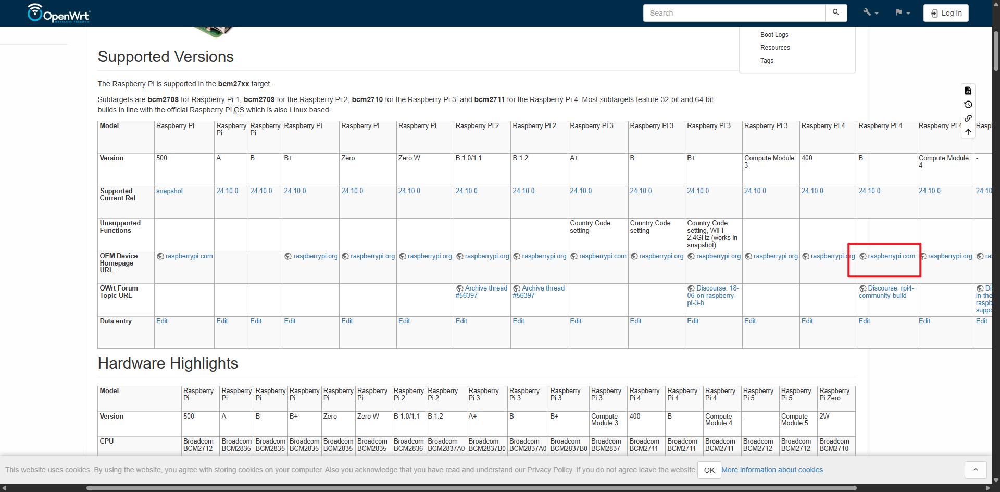
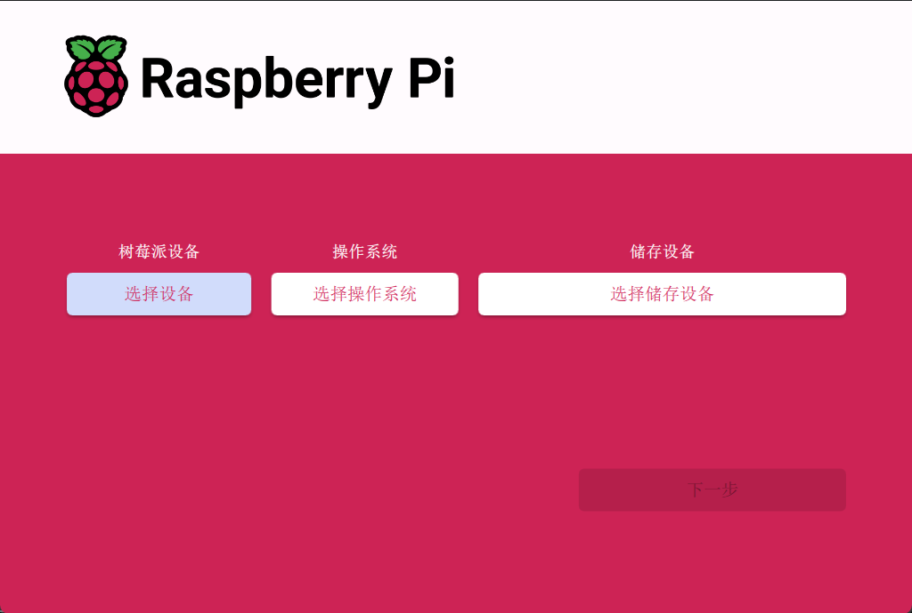
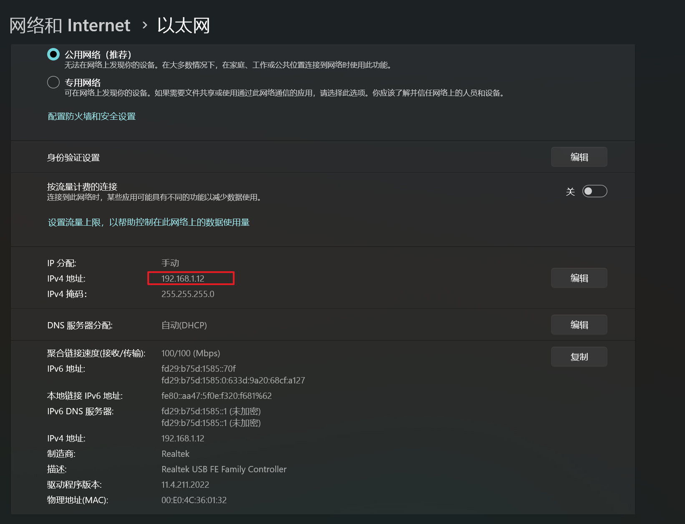
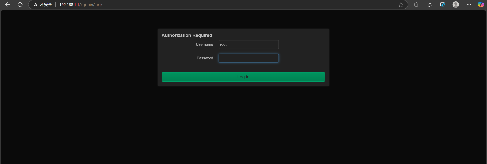
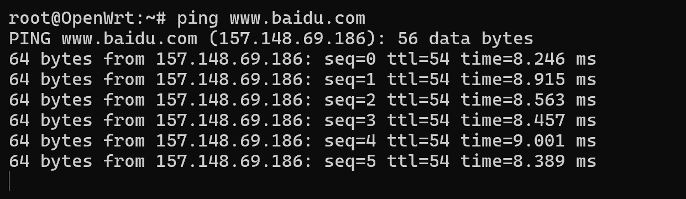
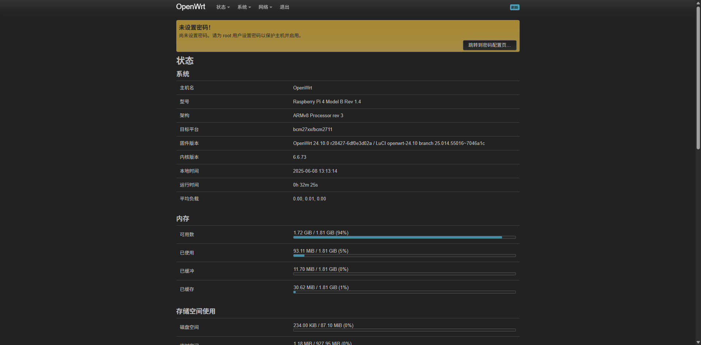
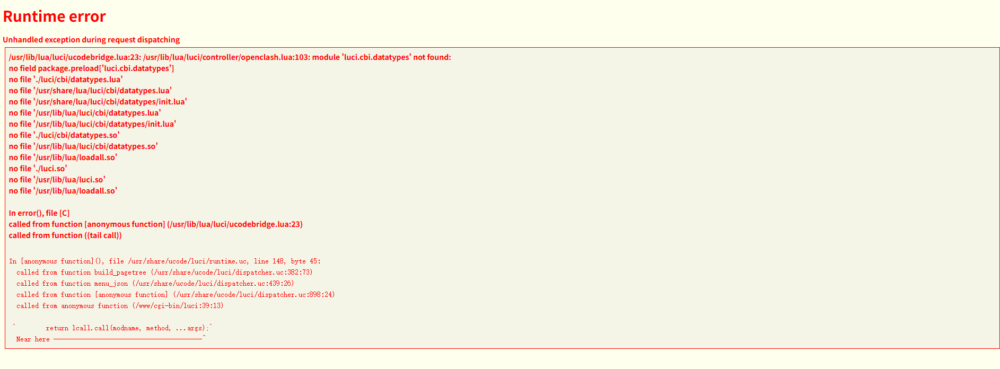
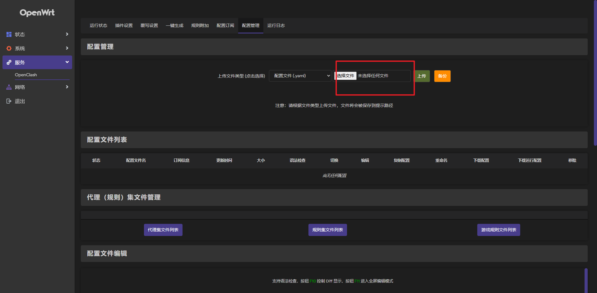
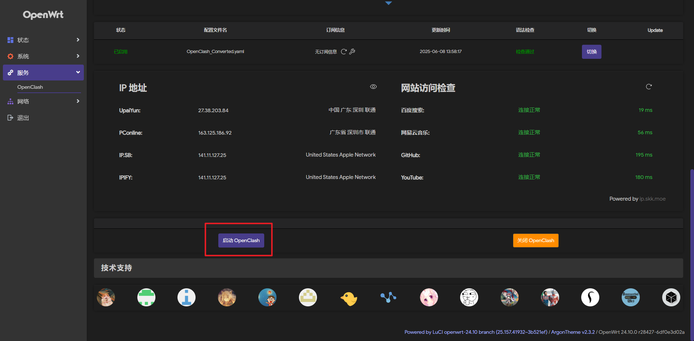

树莓派4安装OpenWRT开启魔法
前言
之前是安装了LEDE，结果发现在OpenClash页面出现无法上传openclash的yaml配置文件，后来就放弃了，如果有朋友可以做到请告诉我，或者提交PR到本文章
步骤
1. 下载OpenWrt
首先去OpenWrt的树莓派页面进行镜像文件的烧录，我使用的是Pi4B，所以下载下图这个镜像文件：  使用树莓派的烧录工具就可以，如果直接使用rufus的工具，请先对卡片进行格式化 
2. 进入后台
openWrt的默认登录地址是192.168.1.1，如果在没有外接显示器的情况下，可以使用网线将树莓派和电脑连接，然后将电脑的ip设置到同一网段，比如我设置的就是192.168.1.12 
这样使用电脑浏览器输入192.168.1.1就可以登录后台了，如下，默认密码是openwrt或者为空

3. 树莓派配置网络
树莓派默认不是DHCP，我们将其配置为DHCP，这样我们就可以使用树莓派连接路由器进行上网，不一定需要在192.168.1.x网段，使用以下指令
uci set network.lan.proto=dhcp
uci commit
/etc/init.d/network restart

4. 配置scp让电脑和树莓派可以互传文件
使用以下指令
opkg update
opkg install openssh-sftp-server
5. 更换主题以及语言
我们首先确认下树莓派能不能上网，可以使用ping www.baidu.com可以测试，成功结果类似下面：

默认的OpenWrt的界面不是很好看并且是英文的，我们设置中文并且配置一个更友好的主题。首先在电脑终端使用
ssh root@192.168.1.1 #根据你自己的树莓派更换IP
opkg update
opkg install luci-i18n-base-zh-cn
/etc/init.d/uhttpd restart
这样我们的OpenWrt就会变成中文页面了

接下来我们来配置主题，本文以为argon为例，输入
opkg install luci-theme-argon
如果没有主题，可以在电脑下载，然后通过scp传输，我这里提供一个argon主题下载,或者也可以去这里进行下载。
使用scp传输：
scp /path/to/luci-theme-argon_2.3.2-r20250207_all.ipk root@192.168.2.104:/tmp # 替换自己的ipk的真实路径
然后使用opkg进行安装
opkg install /path/to/luci-theme-argon_2.3.2-r20250207_all.ipk
6. 安装openclash
如果在没有源的情况下，也可以手动安装openclash，我在这里提供一个下载连接：luci-app-openclash_0.46.086_all.ipk，大家也可以去仓库去进行最新下载。
下载之后在电脑的终端使用scp进行传输
scp /path/to/luci-app-openclash_0.46.086_all.ipk root@192.168.2.104:/tmp # 替换自己的ipk的真实路径
如果出现dnsmasq-full 和系统默认 dnsmasq 包冲突问题如下
Package dnsmasq-full wants to install file ... already provided by package dnsmasq
请先卸载 dnsmasq，再装 dnsmasq-ful，执行以下指令：
# 1. 卸载默认 dnsmasq（系统网络短暂中断，请确认本地连接好）
opkg remove dnsmasq
# 2. 安装 dnsmasq-full（OpenClash 所需）
opkg install dnsmasq-full
# 3. 再次安装 OpenClash
opkg install ./luci-app-openclash_0.46.086_all.ipk
在ssh中使用
opkg install /path/to/luci-app-openclash_0.46.086_all.ipk
/etc/init.d/uhttpd restart
如果安装之后出现

可以使用如下指令进行缺失的模块安装
opkg update
opkg install luci-compat luci-mod-admin-full
如果有足够空间，还可以安装如下模块
opkg install luci luci-base luci-mod-network luci-mod-status
然后使用
/etc/init.d/uhttpd restart
7.使用配置openclash服务
点击openclash服务，首次会出现安装内核提示如下
 请选择cdn进行安装，如果安装失败，也可以考虑老方法，也就是使用电脑下载对应的文件，通过scp进行传输。树莓派4使用armv8架构，点击clash_meta进行下载，或者在github进行下载。
请选择cdn进行安装，如果安装失败，也可以考虑老方法，也就是使用电脑下载对应的文件，通过scp进行传输。树莓派4使用armv8架构，点击clash_meta进行下载，或者在github进行下载。
然后请将文件传输到服务器的/etc/openclash/core，然后执行如下操作（本网站文件已经更名）
cd /etc/openclash/core
gzip -d clash.meta-linux-arm64-2024.04.21.gz
mv clash.meta-linux-arm64-2024.04.21 clash_meta
chmod +x clash_meta
ln -sf clash_meta clash
接着就可以上传yaml配置文件了 
接着i其拿给点击启动openclash进行配置 